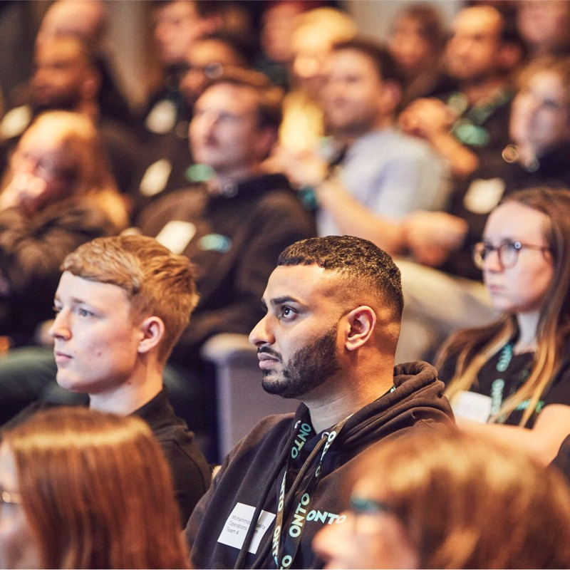
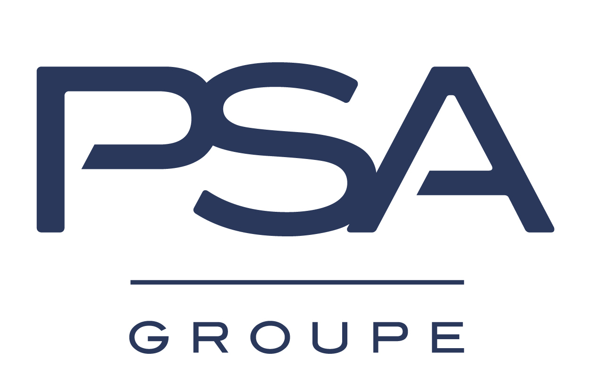
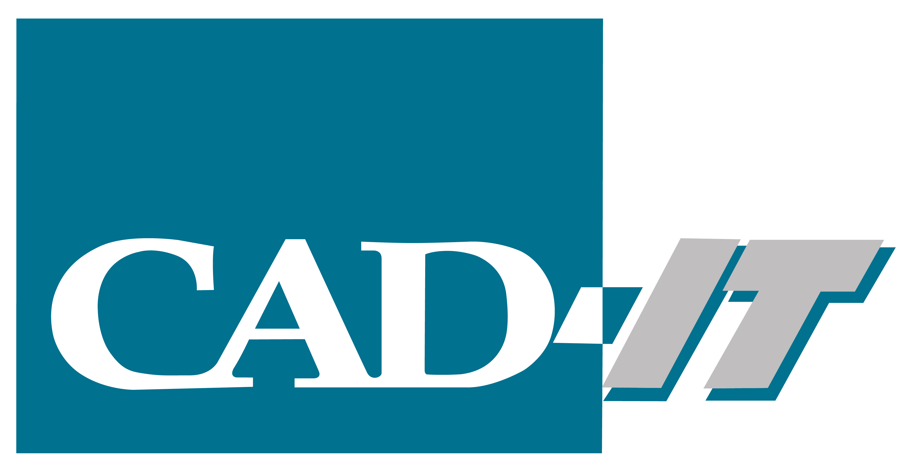

Mohammad Khalifa Resume

Summary
A Creative and enthusiastic individual, who is always searching for a new challenge. I am a strong character
who can work in a team or as an individual. I'm continuously striving to learn new skills and share my ideas
to resolve complicated situation. I also have fantastic computer skills and can adapt quickly to any given
environment.
Key skills
- Professional
- Attention to detail
- Punctual
- Eager to learn
- Loyal
Work Experience
Groupe PSA

Customer Care Advisor
February 2017 - May 2017
In February 2017 I started my job as a customer care advisor working for Group PSA. This covered three
automotive brands which were Peugeot, Citroen and DS automobiles.
My main responsibilities included:
- Handle online questions, phone calls and letters submitted by customers across all 3 brands.
- Create resolution cases for customers to either deal with myself or direct to the customer care
managers.
- Resolving 1 in 3 queries, before escalating the query to a Customer Care Manager.
- Promote PSA Values to ensure a great customer experience.
Customer Care Manager
May 2017 - August 2018
Within three months of being with PSA I was promoted to the Customer Care Manager role. In this role I
was assigned 43 dealerships based in the Northeast of England and Southwest Scotland. I was also assigned
the task of being the technical specialist for customer care.
My main responsibilities in this role included:
- Managing a portfolio of cases that have been escalated to ensure delivery of exceptional customer
service.
- Researching, investigating and identifying the root cause of a customers’ complaint.
- Deciding and ensuring implementation of appropriate responses, also taking a proactive stance until
the issue has been resolved.
- Managing goodwill budgets, mobility and buy back expenditure in line with recommended guidelines.
- Communicating with all customers by phone, email, letter or social media.
- Responding to complaints escalated to the Managing Director.
Inchcape Mercedes

Service Assistant/Advisor
September 2018 - June 2021
As of September 2018, I took up the role of Service Assistant at the most profitable Inchcape Mercedes-
Benz dealership in Leicester. My role was dedicated to supporting the team to ensure we high level of
customer satisfaction was achieved alongside reaching monthly targets.
- Educating customers about their vehicles and how they can try and decrease maintenance costs.
- Ensured relevant service/repair parts were in available at the required time.
- Communicate with the Parts & Workshop teams to ensure customer job is on schedule.
- Managing all incoming breakdowns, ensuring diagnosis is completed within 72 hours of arrival.
- Continuously supported the teams target of 110% Retail Sales, by upselling Red/Amber advisories.
- Provided repair feedback to the customer, which in turn improved CSI score.
- Insuring customers’ vehicles are prepared to a high standard to reflect the premium brand.
ONTO
Fleet Service Advisor
June 2021 - November 2022
In June 2021 I made the transition to working for ONTO, an expanding start-up company who are leading
the way in EV subscription services. In June the fleet size was around 1200 vehicles as of May 2022 the fleet
size is now at 7000 vehicles and growing. During this time, I’ve supported the maintenance function of the
company.
- Maintain and review the vehicle off road report ensuring time off road is kept to a minimum.
- Review customer feedback in relation to their vehicles and seeing how we can improve the
customer experience.
- Following up with dealerships for vehicles with repeat faults and escalating with the OEM.
- Provide technical information to internal members of staff so they’re aware of how EV vehicles
operate differently to ICE vehicles.
- Invoicing and billing customers for damage caused on hire.
- Dealing with insurance claims, reviewing dash cam footage and establishing fault.
- Arranging excess recovery by liaising with our third-party solicitors.
- Manage relationships with external stakeholders to reduce roadblocks.
- Arranging customers to be swapped into a replacement vehicle to keep the customers experience
positive.
CAD-IT

Trainee Technical Author
February 2022 - Current
After being made redundant from ONTO, I started the next step of my career at CAD-IT as a trainee
technical author. CAD-IT is a global company focused on the transition to Industry 4.0 and making this
change as smooth as possible. An Element of what they do is to provide technical authoring for businesses
by using systems such as Cortana 3D to create easy to view repair manuals. During my time, my focus has
been to work on the Caterpillar project on behalf of Veryon.
- Review technical documentation provided by customer to ensure the information provided is
correct and concise.
- Using Spotlight to build the diagnostic steps.
- Reviewing the diagnostic steps in the front-end system to confirm the diagnostic steps are correct
and no errors are present.
- Provide regular update and feedback to the client on how the project is coming along.
- Deliver the project as per the timescale.
Education
BTEC Business Level 3
Grade: Merit
Other